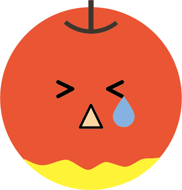
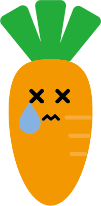
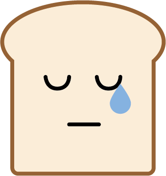
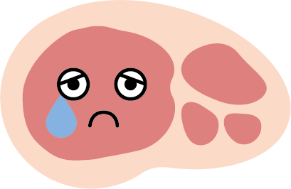

データの視覚化を楽しみながらプログラミングを学ぶ
食品ロス世界ランキング
国連環境計画（UNEP）が発表した
「UNEP Food Waste Index Report 2021」をもとに、
世界各国の家庭で廃棄された食べ物の量を視覚化しました。
このデータは、
- すべて国連環境計画（UNEP）が発表したものであり、
- 各国の食品ロスはあくまでも推計量です。
- また、各国でデータの収集方法や収集時点も異なります。
以上の点を理解した上でご覧ください。
【使用した自作イラスト】



